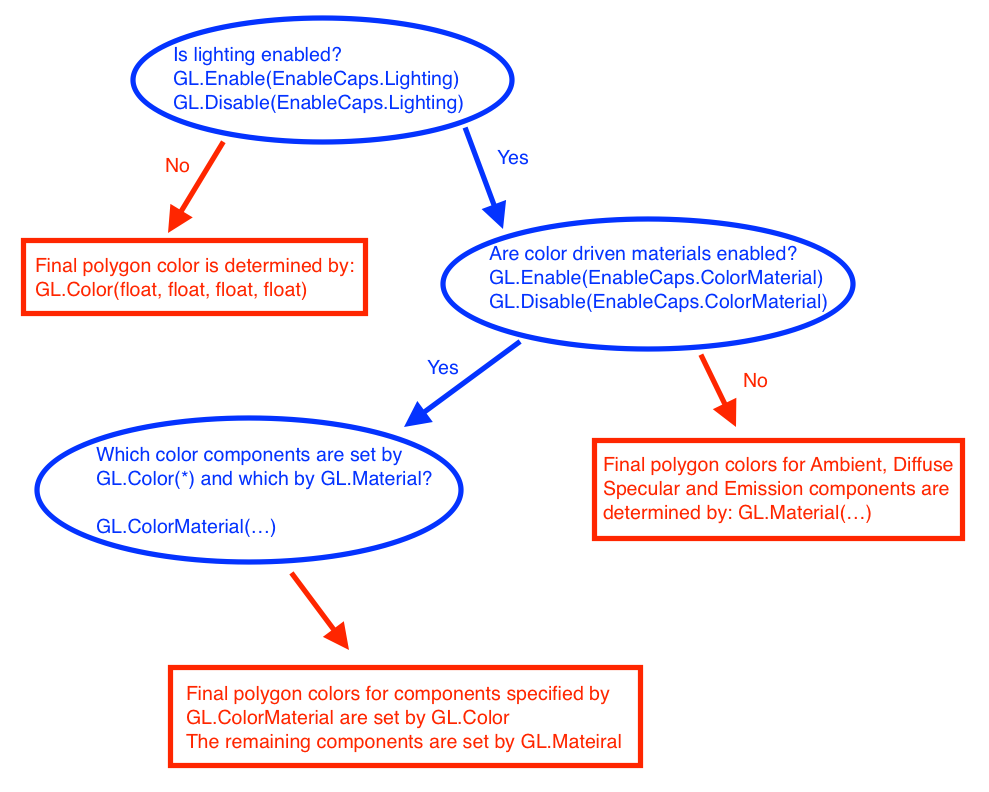

Where render color comes from
This page is a straight up rip of Steve Baker's OpenGL Lighting tutorial. Some of this stuff we've already covered and will serve as a review, other information might be brand new. Think of this as a one page cheat-sheet for lighting.
Introduction
Many people starting out with OpenGL are confused by the way that OpenGL's built-in lighting works - and consequently how color functions. I hope to be able to clear up some of the confusion. What is needed to explain this clearly is a flow chart:

Lighting ENABLED or DISABLED?
The first - and most basic - decision is whether to enable lighting or not.
GL.Enable(EnableCaps.Lighting);
...or...
GL.Disable (EnableCaps.Lighting);
If it's disabled then all polygons, lines and points will be colored according to the setting of the various forms of the GL.Color command. Those colors will be carried forward without any change other than is imparted by texture or fog if those are also enabled. Hence:
GL.Color3(1.0f, 0.0f, 0.0f) ;
...gets you a pure red triangle no matter how it is positioned relative to the light source(s).
With EnableCaps.Lighting enabled, we need to specify more about the surface than just it's color - we also need to know how shiny it is, whether it glows in the dark and whether it scatters light uniformly or in a more directional manner.
The idea is that OpenGL switches over to using the current settings of the current "material" instead of the simplistic idea of a polygon "color". This is an over-simplistic explanation - but keep it firmly in mind.
glMaterial and glLight
The OpenGL light model presumes that the light that reaches your eye from the polygon surface arrives by four different mechanisms:
- AMBIENT - light that comes from all directions equally and is scattered in all directions equally by the polygons in your scene. This isn't quite true of the real world - but it's a good first approximation for light that comes pretty much uniformly from the sky and arrives onto a surface by bouncing off so many other surfaces that it might as well be uniform.
- DIFFUSE - light that comes from a particular point source (like the Sun) and hits surfaces with an intensity that depends on whether they face towards the light or away from it. However, once the light radiates from the surface, it does so equally in all directions. It is diffuse lighting that best defines the shape of 3D objects.
- SPECULAR - as with diffuse lighting, the light comes from a point souce, but with specular lighting, it is reflected more in the manner of a mirror where most of the light bounces off in a particular direction defined by the surface shape. Specular lighting is what produces the shiny highlights and helps us to distinguish between flat, dull surfaces such as plaster and shiny surfaces like polished plastics and metals.
- EMISSION - in this case, the light is actually emitted by the polygon - equally in all directions.
So, there are three light colors for each light - Ambient, Diffuse and Specular (set with GL.Light) and four for each surface (set with GL.Material). All OpenGL implementations support at least eight light sources - and the GL.Material can be changed at will for each polygon.
The final polygon color is the sum of all four light components, each of which is formed by multiplying the GL.Mateiral color by the GL.Light color (modified by the directionality in the case of Diffuse and Specular). Since there is no Emission color for the GL.Light, that is added to the final color without modification.
A good set of settings for a light source would be to set the Diffuse and Specular components to the color of the light source, and the Ambient to the same color - but at MUCH reduced intensity, 10% to 40% seems reasonable in most cases. So, a blue light might be configured like so:
float[] blue = new float[] { 0f, 0f, 1f, 1f };
float[] dimBlue = new float[] { 0f, 0f, 0.1f, 1f);
GL.Light(LightName.Light0, LightParameter.Ambient, dimBlue );
GL.Light(LightName.Light0, LightParameter.Diffuse, blue );
GL.Light(LightName.Light0, LightParameter.Specular, blue );
For the GL.Material, it's usual to set the Ambient and Diffuse colors to the natural color of the object and to put the Specular color to white. The emission color is generally black for objects that do not shine by their own light. So, a yellow object might have the following material:
float[] red = { 1f, 0f, 0f, 1f };
float[] white = { 1f, 1f, 1f, 1f }
float[] black = { 0f, 0f, 0f, 1f }
GL.Material(MaterialFace.FrontAndBack, MaterialParameter.Ambient, red);
GL.Material(MaterialFace.FrontAndBack, MaterialParameter.Diffuse, red);
GL.Material(MaterialFace.FrontAndBack, MaterialParameter.Specular, white);
GL.Material(MaterialFace.FrontAndBack, MaterialParameter.Emission, black);
Before you can use an OpenGL light source, it must be positioned using the GL.Light command and enabled using GL.Enable(EnableCaps.LightN) where 'N' is 0 through 7. There are additional commands to make light sources directional (like a spotlight or a flashlight) and to have it attenuate as a function of range from the light source.
glColorMaterial
This is without doubt the most confusing thing about OpenGL lighting - and the biggest cause of problems for beginners.
The problem with using GL.Material to change polygon colors is two-fold:
- You frequently need to change
GL.Mateiralproperties for both Ambient and Diffuse to identical values - this takes two OpenGL function calls which is annoying. - You cannot change
GL.Mateiralsettings with many of the more advanced polygon rendering techniques such as Vertex arrays andGL.DrawElements.
For these reasons, OpenGL has a feature that allows you do drive the GL.Material colors using the more flexible GL.Color command (which is not otherwise useful when lighting is enabled).
To drive (say) the Emission component of the GL.Material using GL.Color, you must say:
GL.Enable(EnableCap.ColorMaterial);
GL.ColorMaterial(MaterialFace.FrontAndBack, ColorMaterialParameter.Emission);
From this point performing a GL.Color command has the exact same effect as calling:
GL.Material(MaterialFace.FrontAndBack, MaterialParameter.Emission, ...colors...);
One especially useful option is:
GL.ColorMaterial(MaterialFace.FrontAndBack, ColorMaterialParameter.AmbientAndDiffuse);
This causes GL.Color commands to change both Ambient and Diffuse colors at the same time. That's a very common thing to want to do for real-world lighting models.
Light Sources.
OpenGL's lights are turned on and off with GL.Enable(EnableCaps.LightN) and GL.Disable(EnableCaps.LightN) where 'N' is a number in the range zero to the maximum number of lights that this implementation supports (typically eight).
The GL.Light call allows you to specify the color (ambient, diffuse and specular), position, direction, beam width and attenuation rate for each light.
By default, it is assumed that both the light and the viewer are effectively infinitely far from the object being lit. You can change that with the GL.LightModel call - but doing so is likely to slow down your program - so don't do it unless you have to. GL.LightModel also allows you to set a global ambient lighting level that's independent of the other OpenGL light sources.
There is also an option to light the front and back faces of your polygons differently. That is also likely to slow your program down - so don't do it.
glNormal
When lighting is enabled, OpenGL suddenly needs to know the orientation of the surface at each polygon vertex. You need to call GL.Normal for each vertex to define that - OpenGL does not provide a useful default.
Good Settings.
With this huge range of options, it can be hard to pick sensible default values for these things. Even harder is to debug broken lighting! Sometimes you start a scene and everything is black. The best way to debug this is to set some sensible defaults, and work from there.
My advice for a starting point is to:
- Set
EnableCaps.Light0's position to something like 45 degrees to the "vertical". Coordinate (1,1,0) should work nicely in most cases. - Set
EnableCaps.Light0's Ambient color to 0,0,0,1 - Set
EnableCaps.Light0's Diffuse color to 1,1,1,1 - Set
EnableCaps.Light0's Specular color to 1,1,1,1 - Set the
GL.LightModel's global ambient to 0.2,0.2,0.2,1 (this is the default). - Don't set any other
GL.LightorGL.LightModeloptions - just let them default. - Enable
Enable.LightingandEnableCaps.Light0. - Enable
EnableCaps.ColorMaterialand setColorMaterialParameter.ColorMaterialtoColorMaterialParameter.AmbientAndDiffuse. This means thatGL.Materialwill control the polygon's specular and emission colours and the ambient and diffuse will both be set usingGL.Color. - Set the
GL.Material's Specular color to 1,1,1,1 - Set the
GL.Material's Emission color to 0,0,0,1 - Set the
GL.Materialto whatever color you want each polygon to basically appear to be. That sets the Ambient and Diffuse to the same value which is what you generally want.
Using Alpha with lighting enabled.
One confusing thing is that each of the color components (Ambient,Diffuse, Specular and Emission) has an associated "alpha" component for setting transparency.
It is important to know that only the DIFFUSE color's alpha value actually determines the transparency of the polygon. If you have taken my advice and used GL.ClolorMaterial to cause GL.Color to drive the ambient and diffuse components then this seems perfectly natural.
But people sometimes want to use the GL.Color to drive one of the other material components and are then very confused about their inability to set the transparency using GL.Color. If that happens to you - remember to use GL.Material to set the diffuse color - and hence the alpha for the polygon overall.